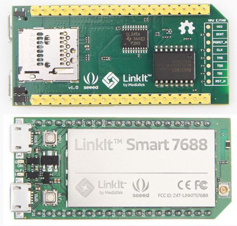
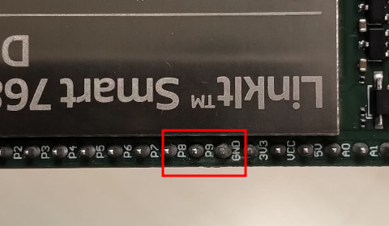
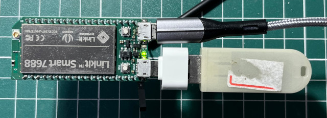

目前市面上可以購買到的MIPS開發板確實不多，司徒選定的MIPS開發板如下：


| LinkIt Smart7688 | PL2303 |
|---|---|
| GND | 黑線 |
| P9 | 綠線 |
| P8 | 白線 |

$ cd $ wget https://github.com/steward-fu/website/releases/download/ldd/mips_gcc-8.30.tar.gz $ tar xvf mips_gcc-8.30.tar.gz $ sudo mv gcc-8.30 /opt/ $ wget https://github.com/steward-fu/website/releases/download/ldd/mips_kernel.tar.gz $ tar xvf mips_kernel.tar.gz $ cd kernel $ ./run.sh
更新系統，步驟如下：
1. 準備USB隨身碟並且格式化成FAT32
2. 複製編譯後的lks7688.img到USB隨身碟
3. 插入USB隨身碟到LinkIt Smart7688的USB Port

Register 1111 NbrPorts 1
USB EHCI 1.00
scanning bus 0 for devices... 2 USB Device(s) found
scanning bus for storage devices... 1 Storage Device(s) found
reading lks7688.img
.......................................................
3145732 bytes read
writing lks7688.img to flash
................................................
................................................
更新完成後，使用minicom(57600bps)就可以看到如下資訊：
Welcome to MT7688 mt7688 login:
P.S. 輸入root即可進入系統
檢查一下Kernel號碼以及編譯者的資訊，如果沒有問題，那代表開發環境已經準備好了
# cat /proc/version
Linux version 3.18.44 (steward@debian) (gcc version 7.4.0 (Buildroot 2019.02.4) ) #2 Tue Dec 19 07:29:26 EST 2023